Nous allons ici découvrir par l'exemple comment utiliser la session.
La situation que nous allons mettre en place est un système de connexion des utilisateurs. Nous allons grandement nous inspirer de ce que nous venons de faire dans le précédent chapitre avec notre système d'inscription, et allons directement appliquer les bonnes pratiques découvertes. Là encore, nous n'allons pas pouvoir mettre en place un système complet de A à Z, puisqu'il nous manque toujours la gestion des données. Mais ce n'est pas important : ce qui compte, c'est que vous tenez là une occasion de plus pour pratiquer la gestion des formulaires en suivant MVC !
Le formulaire
La première chose que nous allons mettre en place est le formulaire de connexion, autrement dit la vue. Cela ne va pas nous demander trop d'efforts : nous allons reprendre l'architecture de la page JSP que nous avons créée dans le chapitre précédent, et l'adapter à nos nouveaux besoins !
Voici le code de notre page connexion.jsp, à placer sous le répertoire /WEB-INF :
Nous reprenons la même architecture que pour le système d'inscription : notre JSP exploite un objet form contenant les éventuels messages d'erreur, et un objet utilisateur contenant les données saisies et validées.
Par ailleurs, nous réutilisons la même feuille de style.
Le principe de la session
Avant d'aller plus loin, nous devons nous attarder un instant sur ce qu'est une session.
Pourquoi les sessions existent-elles ?
Notre application web est basée sur le protocole HTTP, qui est un protocole dit "sans état" : cela signifie que le serveur, une fois qu'il a envoyé une réponse à la requête d'un client, ne conserve pas les données le concernant. Autrement dit, le serveur traite les clients requête par requête et est absolument incapable de faire un rapprochement entre leur origine : pour lui, chaque nouvelle requête émane d'un nouveau client, puisqu'il oublie le client après l'envoi de chaque réponse... Oui, le serveur HTTP est un peu gâteux ! :-°
C'est pour pallier cette lacune que le concept de session a été créé : il permet au serveur de mémoriser des informations relatives au client, d'une requête à l'autre.
la session représente un espace mémoire alloué pour chaque utilisateur, permettant de sauvegarder des informations tout le long de leur visite ;
le contenu d'une session est conservé jusqu'à ce que l'utilisateur ferme son navigateur, reste inactif trop longtemps, ou encore lorsqu'il se déconnecte du site ;
l'objet Java sur lequel se base une session est l'objet HttpSession ;
il existe un objet implicite sessionScope permettant d'accéder directement au contenu de la session depuis une expression EL dans une page JSP.
Comment manipuler cet objet depuis une servlet ?
Pour commencer, il faut le récupérer depuis l'objet HttpServletRequest. Cet objet propose en effet une méthode getSession(), qui permet de récupérer la session associée à la requête HTTP en cours si elle existe, ou d'en créer une si elle n'existe pas encore :
HttpSession session = request.getSession();
Ensuite, lorsque nous étudions attentivement la documentation de cet objet, nous remarquons entre autres :
qu'il propose un couple de méthodes setAttribute() / getAttribute(), permettant la mise en place d'objets au sein de la session et leur récupération, tout comme dans l'objet HttpServletRequest ;
qu'il propose une méthode getId(), retournant un identifiant unique permettant de déterminer à qui appartient telle session.
Nous savons donc maintenant qu'il nous suffit d'appeler le code suivant pour enregistrer un objet en session depuis notre servlet, puis le récupérer :
/* Création ou récupération de la session */
HttpSession session = request.getSession();
/* Mise en session d'une chaîne de caractères */
String exemple = "abc";
session.setAttribute( "chaine", exemple );
/* Récupération de l'objet depuis la session */
String chaine = (String) session.getAttribute( "chaine" );
C'est tout ce que nous avons besoin de savoir pour le moment.
Observez sur la figure suivante l'enchaînement lors de la première visite d'un utilisateur sur une page ou servlet contenant un appel à request.getSession().
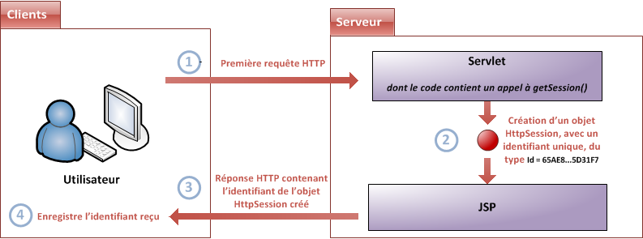
le navigateur de l'utilisateur envoie une requête au serveur ;
la servlet ne trouve aucune session existante lors de l'appel à getSession(), et crée donc un nouvel objet HttpSession qui contient un identifiant unique ;
le serveur place automatiquement l'identifiant de l'objet session dans la réponse renvoyée au navigateur de l'utilisateur ;
le navigateur enregistre l'identifiant que le serveur lui a envoyé.
Observez alors à la figure suivante ce qui se passe lors des prochaines visites.
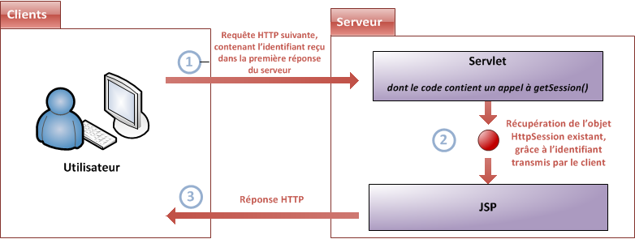
le navigateur place automatiquement l'identifiant enregistré dans la requête qu'il envoie au serveur ;
la servlet retrouve la session associée à l'utilisateur lors de l'appel à getSession(), grâce à l'identifiant unique que le navigateur a placé dans la requête ;
le serveur sait que le navigateur du client a déjà enregistré l'identifiant de la session courante, et renvoie donc une réponse classique à l'utilisateur : il sait qu'il n'est pas nécessaire de lui transmettre à nouveau l'identifiant !
Vous avez maintenant tout en main pour comprendre comment l'établissement d'une session fonctionne. En ce qui concerne les rouages du système, chaque chose en son temps : dans la dernière partie de ce chapitre, nous analyserons comment tout cela s'organise dans les coulisses !
Très bien, nous avons compris comment ça marche. Maintenant dans notre cas, qu'avons-nous besoin d'enregistrer en session ?
En effet, c'est une très bonne question : qu'est-il intéressant et utile de stocker en session ? Rappelons-le, notre objectif est de connecter un utilisateur : nous souhaitons donc être capables de le reconnaître d'une requête à l'autre.
La première intuition qui nous vient à l'esprit, c'est naturellement de sauvegarder l'adresse mail et le mot de passe de l'utilisateur dans un objet, et de placer cet objet dans la session !
Le modèle
D'après ce que nous venons de déduire, nous pouvons nous inspirer de ce que nous avons créé dans le chapitre précédent. Il va nous falloir :
un bean représentant un utilisateur, que nous placerons en session lors de la connexion ;
un objet métier représentant le formulaire de connexion, pour traiter et valider les données et connecter l'utilisateur.
En ce qui concerne l'utilisateur, nous n'avons besoin de rien de nouveau : nous disposons déjà du bean créé pour le système d'inscription ! Vous devez maintenant bien mieux saisir le caractère réutilisable du JavaBean, que je vous vantais dans ce chapitre.
En ce qui concerne le formulaire, là par contre nous allons devoir créer un nouvel objet métier. Eh oui, nous n'y coupons pas : pour chaque nouveau formulaire, nous allons devoir mettre en place un nouvel objet. Vous découvrez ici un des inconvénients majeurs de l'application de MVC dans une application Java EE uniquement basée sur le trio objets métier - servlets - pages JSP : il faut réécrire les méthodes de récupération, conversion et validation des paramètres de la requête HTTP à chaque nouvelle requête traitée !
Nous devons donc créer un objet métier, que nous allons nommer ConnexionForm et qui va grandement s'inspirer de l'objet InscriptionForm :
package com.sdzee.forms;
import java.util.HashMap;
import java.util.Map;
import javax.servlet.http.HttpServletRequest;
import com.sdzee.beans.Utilisateur;
public final class ConnexionForm {
private static final String CHAMP_EMAIL = "email";
private static final String CHAMP_PASS = "motdepasse";
private String resultat;
private Map<String, String> erreurs = new HashMap<String, String>();
public String getResultat() {
return resultat;
}
public Map<String, String> getErreurs() {
return erreurs;
}
public Utilisateur connecterUtilisateur( HttpServletRequest request ) {
/* Récupération des champs du formulaire */
String email = getValeurChamp( request, CHAMP_EMAIL );
String motDePasse = getValeurChamp( request, CHAMP_PASS );
Utilisateur utilisateur = new Utilisateur();
/* Validation du champ email. */
try {
validationEmail( email );
} catch ( Exception e ) {
setErreur( CHAMP_EMAIL, e.getMessage() );
}
utilisateur.setEmail( email );
/* Validation du champ mot de passe. */
try {
validationMotDePasse( motDePasse );
} catch ( Exception e ) {
setErreur( CHAMP_PASS, e.getMessage() );
}
utilisateur.setMotDePasse( motDePasse );
/* Initialisation du résultat global de la validation. */
if ( erreurs.isEmpty() ) {
resultat = "Succès de la connexion.";
} else {
resultat = "Échec de la connexion.";
}
return utilisateur;
}
/**
* Valide l'adresse email saisie.
*/
private void validationEmail( String email ) throws Exception {
if ( email != null && !email.matches( "([^.@]+)(\\.[^.@]+)*@([^.@]+\\.)+([^.@]+)" ) ) {
throw new Exception( "Merci de saisir une adresse mail valide." );
}
}
/**
* Valide le mot de passe saisi.
*/
private void validationMotDePasse( String motDePasse ) throws Exception {
if ( motDePasse != null ) {
if ( motDePasse.length() < 3 ) {
throw new Exception( "Le mot de passe doit contenir au moins 3 caractères." );
}
} else {
throw new Exception( "Merci de saisir votre mot de passe." );
}
}
/*
* Ajoute un message correspondant au champ spécifié à la map des erreurs.
*/
private void setErreur( String champ, String message ) {
erreurs.put( champ, message );
}
/*
* Méthode utilitaire qui retourne null si un champ est vide, et son contenu
* sinon.
*/
private static String getValeurChamp( HttpServletRequest request, String nomChamp ) {
String valeur = request.getParameter( nomChamp );
if ( valeur == null || valeur.trim().length() == 0 ) {
return null;
} else {
return valeur;
}
}
}
Nous retrouvons ici la même architecture que dans l'objet InscriptionForm :
des constantes d'identification des champs du formulaire ;
des méthodes de validation des champs ;
une méthode de gestion des erreurs ;
une méthode centrale, connecterUtilisateur(), qui fait intervenir les méthodes précédemment citées et renvoie un bean Utilisateur.
La servlet
Afin de rendre tout ce petit monde opérationnel, nous devons mettre en place une servlet dédiée à la connexion. Une fois n'est pas coutume, nous allons grandement nous inspirer de ce que nous avons créé dans les chapitres précédents. Voici donc le code de la servlet nommée Connexion, placée tout comme sa grande sœur dans le package com.sdzee.servlets :
package com.sdzee.servlets;
import java.io.IOException;
import javax.servlet.ServletException;
import javax.servlet.http.HttpServlet;
import javax.servlet.http.HttpServletRequest;
import javax.servlet.http.HttpServletResponse;
import javax.servlet.http.HttpSession;
import com.sdzee.beans.Utilisateur;
import com.sdzee.forms.ConnexionForm;
public class Connexion extends HttpServlet {
public static final String ATT_USER = "utilisateur";
public static final String ATT_FORM = "form";
public static final String ATT_SESSION_USER = "sessionUtilisateur";
public static final String VUE = "/WEB-INF/connexion.jsp";
public void doGet( HttpServletRequest request, HttpServletResponse response ) throws ServletException, IOException {
/* Affichage de la page de connexion */
this.getServletContext().getRequestDispatcher( VUE ).forward( request, response );
}
public void doPost( HttpServletRequest request, HttpServletResponse response ) throws ServletException, IOException {
/* Préparation de l'objet formulaire */
ConnexionForm form = new ConnexionForm();
/* Traitement de la requête et récupération du bean en résultant */
Utilisateur utilisateur = form.connecterUtilisateur( request );
/* Récupération de la session depuis la requête */
HttpSession session = request.getSession();
/**
* Si aucune erreur de validation n'a eu lieu, alors ajout du bean
* Utilisateur à la session, sinon suppression du bean de la session.
*/
if ( form.getErreurs().isEmpty() ) {
session.setAttribute( ATT_SESSION_USER, utilisateur );
} else {
session.setAttribute( ATT_SESSION_USER, null );
}
/* Stockage du formulaire et du bean dans l'objet request */
request.setAttribute( ATT_FORM, form );
request.setAttribute( ATT_USER, utilisateur );
this.getServletContext().getRequestDispatcher( VUE ).forward( request, response );
}
}
Au niveau de la structure, rien de nouveau : la servlet joue bien un rôle d'aiguilleur, en appelant les traitements présents dans l'objet ConnexionForm, et en récupérant le bean utilisateur. Ce qui change cette fois, c'est bien entendu la gestion de la session :
à la ligne 33, nous appelons la méthode request.getSession() pour créer une session ou récupérer la session existante ;
dans le bloc if lignes 39 à 43, nous enregistrons le bean utilisateur en tant qu'attribut de session uniquement si aucune erreur de validation n'a été envoyée lors de l'exécution de la méthode connecterUtilisateur(). À partir du moment où une seule erreur est détectée, c'est-à-dire si form.getErreurs().isEmpty() renvoie false, alors le bean utilisateur est supprimé de la session, via un passage de l'attribut à null.
Pour terminer, voici la configuration de cette servlet dans le fichier web.xml de l'application :
Une fois tout ce code bien en place et votre serveur redémarré, vous pouvez accéder à la page de connexion via votre navigateur en vous rendant sur l'URL http://localhost:8080/pro/connexion. À la figure suivante, le résultat attendu.
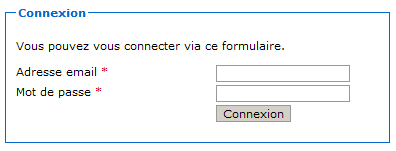Formulaire de connexion
Oui mais voilà, nous n'avons pas encore de moyen de tester le bon fonctionnement de ce semblant de système de connexion ! Et pour cause, les seuls messages que nous affichons dans notre vue, ce sont les résultats des vérifications du contenu des champs du formulaire... Aux figures suivantes, le résultat actuel respectivement lors d'un échec et d'un succès de la validation.
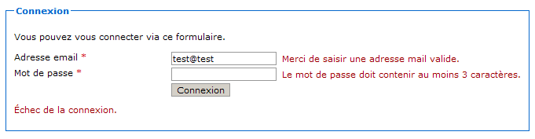Échec de la connexion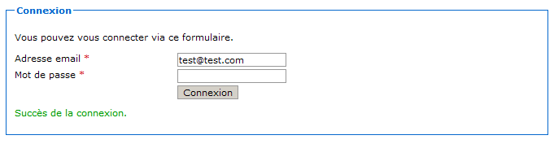Succès de la connexion
Ce qu'il serait maintenant intéressant de vérifier dans notre vue, c'est le contenu de la session. Et comme le hasard fait très bien les choses, je vous ai justement rappelé en début de chapitre qu'il existe un objet implicite nommé sessionScope dédié à l'accès au contenu de la session !
Les vérifications
Test du formulaire de connexion
Pour commencer, nous allons donc modifier notre page JSP afin d'afficher le contenu de la session :
<%@ page pageEncoding="UTF-8" %>
<%@ taglib uri="http://java.sun.com/jsp/jstl/core" prefix="c" %>
<!DOCTYPE html>
<html>
<head>
<meta charset="utf-8" />
<title>Connexion</title>
<link type="text/css" rel="stylesheet" href="form.css" />
</head>
<body>
<form method="post" action="connexion">
<fieldset>
<legend>Connexion</legend>
<p>Vous pouvez vous connecter via ce formulaire.</p>
<label for="nom">Adresse email <span class="requis">*</span></label>
<input type="email" id="email" name="email" value="<c:out value="${utilisateur.email}"/>" size="20" maxlength="60" />
<span class="erreur">${form.erreurs['email']}</span>
<label for="motdepasse">Mot de passe <span class="requis">*</span></label>
<input type="password" id="motdepasse" name="motdepasse" value="" size="20" maxlength="20" />
<span class="erreur">${form.erreurs['motdepasse']}</span>
<input type="submit" value="Connexion" class="sansLabel" />
<p class="${empty form.erreurs ? 'succes' : 'erreur'}">${form.resultat}</p>
<%-- Vérification de la présence d'un objet utilisateur en session --%>
<c:if test="${!empty sessionScope.sessionUtilisateur}">
<%-- Si l'utilisateur existe en session, alors on affiche son adresse email. --%>
<p class="succes">Vous êtes connecté(e) avec l'adresse : ${sessionScope.sessionUtilisateur.email}</p>
</c:if>
</fieldset>
</form>
</body>
</html>
Dans cette courte modification, aux lignes 31 à 35, vous pouvez remarquer :
l'utilisation de l'objet implicite sessionScope pour cibler la portée session ;
la mise en place d'un test conditionnel via la balise <c:if>. Son contenu (les lignes 33 et 34) s'affichera uniquement si le test est validé ;
le test de l'existence d'un objet via l'expression ${!empty ...}. Si aucun objet n'est trouvé, ce test renvoie false ;
l'accès au bean sessionUtilisateur de la session via l'expression ${sessionScope.sessionUtilisateur} ;
l'accès à la propriété email du bean sessionUtilisateur via l'expression ${sessionScope.sessionUtilisateur.email}.
Accédez maintenant à la page http://localhost:8080/pro/connexion, et entrez des données valides. Voici à la figure suivante le résultat attendu après succès de la connexion.
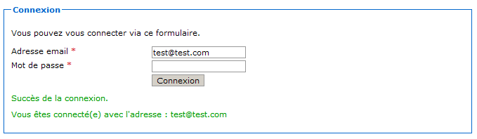
Ensuite, réaffichez la page http://localhost:8080/pro/connexion, mais attention pas en appuyant sur F5 ni en actualisant la page : cela renverrait les données de votre formulaire ! Non, simplement entrez à nouveau l'URL dans le même onglet de votre navigateur, ou bien ouvrez un nouvel onglet. Voici à la figure suivante le résultat attendu.
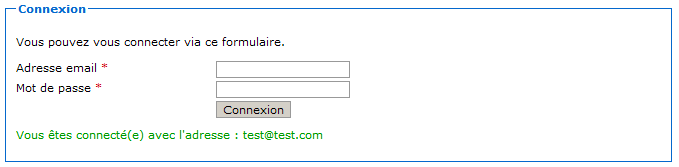
Vous pouvez alors constater que la mémorisation de l'utilisateur a fonctionné ! Lorsqu'il a reçu la deuxième requête d'affichage du formulaire, le serveur vous a reconnus : il sait que vous êtes le client qui a effectué la requête de connexion auparavant, et a conservé vos informations dans la session. En outre, vous voyez également que les informations qui avaient été saisies dans les champs du formulaire lors de la première requête sont bien évidemment perdues : elles n'avaient été gérées que via l'objet request, et ont donc été détruites après envoi de la première réponse au client.
Pour finir, testons l'effacement de l'objet de la session lorsqu'une erreur de validation survient. Remplissez le formulaire avec des données invalides, et regardez à la figure suivante le résultat renvoyé.
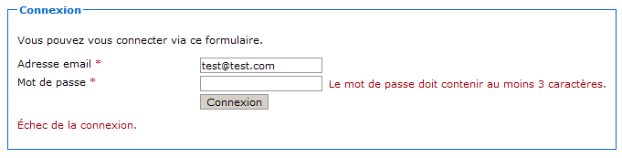
Le contenu du corps de la balise <c:if> n'est ici pas affiché. Cela signifie que le test de présence de l'objet en session a retourné false, et donc que notre servlet a bien passé l'objet utilisateur à null dans la session. En conclusion, jusqu'à présent, tout roule ! ;)
Test de la destruction de session
Je vous l'ai rappelé en début de chapitre, la session peut être détruite dans plusieurs circonstances :
l'utilisateur ferme son navigateur ;
la session expire après une période d'inactivité de l'utilisateur ;
l'utilisateur se déconnecte.
L'utilisateur ferme son navigateur
Ce paragraphe va être très court. Faites le test vous-mêmes :
ouvrez un navigateur et affichez le formulaire de connexion ;
entrez des données valides et connectez-vous ;
fermez votre navigateur ;
rouvrez-le, et rendez-vous à nouveau sur le formulaire de connexion.
Vous constaterez alors que le serveur ne vous a pas reconnus : les informations vous concernant n'existent plus, et le serveur considère que vous êtes un nouveau client.
La session expire après une période d'inactivité de l'utilisateur
Par défaut avec Tomcat, la durée maximum de validité imposée au-delà de laquelle la session est automatiquement détruite par le serveur est de 30 minutes. Vous vous doutez bien que nous n'allons pas poireauter une demi-heure devant notre écran pour vérifier si cela fonctionne bien : vous avez la possibilité via le fichier web.xml de votre application de personnaliser cette durée. Ouvrez-le dans Eclipse et modifiez-le comme suit :
Le champ <session-timeout> permet de définir en minutes le temps d'inactivité de l'utilisateur après lequel sa session est détruite. Je l'ai ici abaissé à une minute, uniquement pour effectuer notre vérification. Redémarrez Tomcat afin que la modification apportée au fichier soit prise en compte, puis :
ouvrez un navigateur et affichez le formulaire de connexion ;
entrez des données valides et connectez-vous ;
attendez quelques minutes, puis affichez à nouveau le formulaire, dans la même page ou dans un nouvel onglet.
Vous constaterez alors que le serveur vous a oubliés : les informations vous concernant n'existent plus, et le serveur considère que vous êtes un nouveau client.
L'utilisateur se déconnecte
Cette dernière vérification va nécessiter un peu de développement. En effet, nous avons créé une servlet de connexion, mais nous n'avons pas encore mis en place de servlet de déconnexion. Par conséquent, il est pour le moment impossible pour le client de se déconnecter volontairement du site, il est obligé de fermer son navigateur ou d'attendre que la durée d'inactivité soit dépassée.
Comment détruire manuellement une session ?
Il faut regarder dans la documentation de l'objet HttpSession pour répondre à cette question : nous y trouvons une méthode invalidate(), qui supprime une session et les objets qu'elle contient, et envoie une exception si jamais elle est appliquée sur une session déjà détruite.
Créons sans plus attendre notre nouvelle servlet nommée Deconnexion :
package com.sdzee.servlets;
import java.io.IOException;
import javax.servlet.ServletException;
import javax.servlet.http.HttpServlet;
import javax.servlet.http.HttpServletRequest;
import javax.servlet.http.HttpServletResponse;
import javax.servlet.http.HttpSession;
public class Deconnexion extends HttpServlet {
public static final String URL_REDIRECTION = "http://www.siteduzero.com";
public void doGet( HttpServletRequest request, HttpServletResponse response ) throws ServletException, IOException {
/* Récupération et destruction de la session en cours */
HttpSession session = request.getSession();
session.invalidate();
/* Redirection vers le Site du Zéro ! */
response.sendRedirect( URL_REDIRECTION );
}
}
Vous remarquez ici deux nouveautés :
l'appel à la méthode invalidate() de l'objet HttpSession ;
la redirection vers la page de connexion via la méthode sendRedirect() de l'objet HttpServletResponse, en lieu et place du forwarding que nous utilisions auparavant.
Quelle est la différence entre la redirection et le forwarding ?
En réalité, vous le savez déjà ! Eh oui, vous ne l'avez pas encore appliqué depuis une servlet, mais je vous ai déjà expliqué le principe lorsque nous avons découvert la balise <c:redirect>, dans cette partie du chapitre portant sur la JSTL Core.
Pour rappel donc, une redirection HTTP implique l'envoi d'une réponse au client, alors que le forwarding s'effectue sur le serveur et le client n'en est pas tenu informé. Cela implique notamment que, via un forwarding, il est uniquement possible de cibler des pages internes à l'application, alors que via la redirection il est possible d'atteindre n'importe quelle URL publique ! En l'occurrence, dans notre servlet j'ai fait en sorte que lorsque vous vous déconnectez, vous êtes redirigés vers votre site web préféré. :honte:
Fin du rappel, nous allons de toute manière y revenir dans le prochain paragraphe. Pour le moment, concentrons-nous sur la destruction de notre session !
Déclarons notre servlet dans le fichier web.xml de l'application :
Vous constaterez alors que lors de votre retour le serveur ne vous reconnaît pas : la session a bien été détruite.
Différence entre forwarding et redirection
Avant de continuer, puisque nous y sommes, testons cette histoire de forwarding et de redirection. Modifiez le code de la servlet comme suit :
package com.sdzee.servlets;
import java.io.IOException;
import javax.servlet.ServletException;
import javax.servlet.http.HttpServlet;
import javax.servlet.http.HttpServletRequest;
import javax.servlet.http.HttpServletResponse;
import javax.servlet.http.HttpSession;
public class Deconnexion extends HttpServlet {
public static final String VUE = "/connexion";
public void doGet( HttpServletRequest request, HttpServletResponse response ) throws ServletException, IOException {
/* Récupération et destruction de la session en cours */
HttpSession session = request.getSession();
session.invalidate();
/* Affichage de la page de connexion */
this.getServletContext().getRequestDispatcher( VUE ).forward( request, response );
}
}
Nous avons ici simplement mis en place un forwarding vers la servlet de connexion : une fois déconnectés, vous allez visualiser le formulaire de connexion dans votre navigateur. Oui, mais voyez plutôt ce qu'indique la figure suivante !
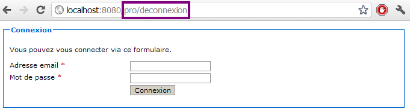Forwarding.
Vous comprenez ce qu'il s'est passé ? Comme je vous l'ai expliqué dans plusieurs chapitres, le client n'est pas au courant qu'un forwarding a été réalisé côté serveur. Pour lui, la page jointe est /pro/deconnexion, et c'est bien elle qui lui a renvoyé une réponse HTTP. Par conséquent, l'URL dans la barre d'adresses de votre navigateur n'a pas changé ! Pourtant, côté serveur, a été effectué un petit enchaînement de forwardings, comme on peut le voir à la figure suivante.
Avec un forwarding
l'utilisateur accède à la page de déconnexion depuis son navigateur ;
la servlet de déconnexion transfère la requête vers la servlet de connexion via un forwarding ;
la servlet de connexion transfère la requête vers la JSP du formulaire de connexion via un forwarding ;
la JSP renvoie le formulaire à l'utilisateur.
Ce que vous devez comprendre avec ce schéma, c'est que du point de vue du client, pour qui le serveur est comme une grosse boîte noire, la réponse envoyée par la JSP finale correspond à la requête vers la servlet de déconnexion qu'il a effectuée. C'est donc pour cette raison que l'utilisateur croit que la réponse est issue de la servlet de déconnexion, et que son navigateur lui affiche toujours l'URL de la page de déconnexion dans la barre d'adresses : il ne voit pas ce qui se passe côté serveur, et ne sait pas qu'en réalité sa requête a été baladée de servlet en servlet.
Voyons maintenant ce qui se passerait si nous utilisions une redirection vers la page de connexion à la place du forwarding dans la servlet de déconnexion (voir la figure suivante).
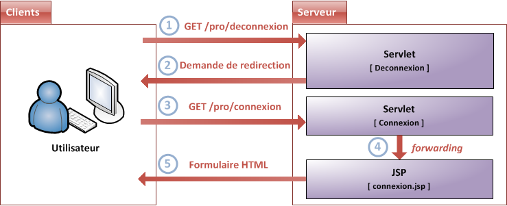Avec une redirection
l'utilisateur accède à la page de déconnexion depuis son navigateur ;
la servlet de déconnexion envoie une demande de redirection au navigateur vers la servlet de connexion, via un sendRedirect( "/pro/connexion" ) ;
le navigateur de l'utilisateur exécute alors la redirection et effectue alors une nouvelle requête vers la servlet de connexion ;
la servlet de connexion transfère la requête vers la JSP du formulaire de connexion via un forwarding ;
la JSP renvoie le formulaire à l'utilisateur.
Cette fois, vous voyez bien que la réponse envoyée par la JSP finale correspond à la seconde requête effectuée par le navigateur, à savoir celle vers la servlet de connexion. Ainsi, l'URL affichée dans la barre d'adresses du navigateur est bien celle de la page de connexion, et l'utilisateur n'est pas dérouté.
Certes, dans le cas de notre page de déconnexion et de notre forwarding, le fait que le client ne soit pas au courant du cheminement de sa requête au sein du serveur n'a rien de troublant, seule l'URL n'est pas en accord avec l'affichage final. En effet, si le client appuie sur F5 et actualise la page, cela va appeler à nouveau la servlet de déconnexion, qui va supprimer sa session si elle existe, puis à nouveau faire un forwarding, puis finir par afficher le formulaire de connexion à nouveau.
Seulement imaginez maintenant que nous n'avons plus affaire à un système de déconnexion, mais à un système de gestion de compte en banque, dans lequel la servlet de déconnexion deviendrait une servlet de transfert d'argent, et la servlet de connexion deviendrait une servlet d'affichage du solde du compte. Si nous gardons ce système de forwarding, après que le client effectue un transfert d'argent, il est redirigé de manière transparente vers l'affichage du solde de son compte. Et là, ça devient problématique : si le client ne fait pas attention, et qu'il actualise la page en pensant simplement actualiser l'affichage de son solde, il va en réalité à nouveau effectuer un transfert d'argent, puisque l'URL de son navigateur est restée figée sur la première servlet contactée...
Vous comprenez mieux maintenant pourquoi je vous avais conseillé d'utiliser <c:redirect> plutôt que <jsp:forward> dans le chapitre sur la JSTL Core, et pourquoi dans notre exemple j'ai mis en place une redirection HTTP via sendRedirect() plutôt qu'un forwarding ? :D
Derrière les rideaux
La théorie : principe de fonctionnement
C'est bien joli tout ça, mais nous n'avons toujours pas abordé la question fatidique :
Comment fonctionnent les sessions ?
Jusqu'à présent, nous ne sommes pas inquiétés de ce qui se passe derrière les rideaux. Et pourtant croyez-moi, il y a de quoi faire !
La chose la plus importante à retenir, c'est que c'est vous qui contrôlez l'existence d'une session dans votre application. Un objet HttpSession dédié à un utilisateur sera créé ou récupéré uniquement lorsque la page qu'il visite implique un appel àrequest.getSession(), en d'autres termes uniquement lorsque vous aurez placé un tel appel dans votre code. En ce qui concerne la gestion de l'objet, c'est le conteneur de servlets qui va s'en charger, en le créant et le stockant en mémoire. Au passage, le serveur dispose d'un moyen pour identifier chaque session qu'il crée : il leur attribue un identifiant unique, que nous pouvons d'ailleurs retrouver via la méthode session.getId().
Ensuite, le conteneur va mettre en place un élément particulier dans la réponse HTTP qu'il va renvoyer au client : un Cookie. Nous reviendrons plus tard sur ce que sont exactement ces cookies, et comment les manipuler. Pour le moment, voyez simplement un cookie comme un simple marqueur, un petit fichier texte qui :
contient des informations envoyées par le serveur ;
est stocké par votre navigateur, directement sur votre poste ;
a obligatoirement un nom et une valeur.
En l'occurrence, le cookie mis en place lors de la gestion d'une session utilisateur par le serveur se nomme JSESSIONID, et contient l'identifiant de session unique en tant que valeur.
Pour résumer, le serveur va placer directement chez le client son identifiant de session. Donc, chaque fois qu'il crée une session pour un nouveau client, le serveur va envoyer son identifiant au navigateur de celui-ci.
Comment est géré ce cookie ?
Je vous l'ai déjà dit, nous allons y revenir plus en détail dans un prochain chapitre. Toutefois, nous pouvons déjà esquisser brièvement ce qui se passe dans les coulisses. La spécification du cookie HTTP, qui constitue un contrat auquel tout navigateur web décent ainsi que tout serveur web doit adhérer, est très claire : elle demande au navigateur de renvoyer ce cookie dans les requêtes suivantes tant que le cookie reste valide.
Voilà donc la clé du système : le conteneur de servlets va analyser chaque requête HTTP entrante, y chercher le cookie ayant pour nom JSESSIONID et utiliser sa valeur, c'est-à-dire l'identifiant de session, afin de récupérer l'objet HttpSession associé dans la mémoire du serveur.
Quand les données ainsi stockées deviennent-elles obsolètes ?
Côté serveur, vous le savez déjà : l'objet HttpSesssion existera tant que sa durée de vie n'aura pas dépassé le temps qu'il est possible de spécifier dans la section <session-timeout> du fichier web.xml, qui est par défaut de trente minutes. Donc si le client n'utilise plus l'application pendant plus de trente minutes, le conteneur de servlets détruira sa session. Aucune des requêtes suivantes, y compris celles contenant le cookie, n'aura alors accès à la précédente session : le conteneur de servlets en créera une nouvelle.
Côté client, le cookie de session a une durée de vie également, qui par défaut est limitée au temps durant lequel le navigateur reste ouvert. Lorsque le client ferme son navigateur, le cookie est donc détruit côté client. Si le client ouvre à nouveau son navigateur, le cookie associé à la précédente session ne sera alors plus envoyé. Nous revenons alors au principe général que je vous ai énoncé quelques lignes plus tôt : un appel à request.getSession() retournerait alors un nouvel objet HttpSession, et mettrait ainsi en place un nouveau cookie contenant un nouvel identifiant de session.
Plutôt que de vous ressortir les schémas précédents en modifiant et complétant les légendes et explications pour y faire apparaître la gestion du cookie, je vais vous faire pratiquer ! Nous allons directement tester notre petit système de connexion, et analyser ce qui se trame dans les entrailles des échanges HTTP... :pirate:
La pratique : scrutons nos requêtes et réponses
Pour commencer, nous allons reprendre notre exemple de connexion et analyser les échanges qu'il engendre :
redémarrez votre serveur Tomcat ;
fermez votre navigateur, puis ouvrez-le à nouveau ;
supprimez toutes les données qui y sont automatiquement enregistrées. Depuis Firefox ou Chrome, il suffit d'appuyer simultanément sur Ctrl + Maj + Suppr pour qu'un menu de suppression du cache, des cookies et autres données diverses apparaisse (voir les figures suivantes).
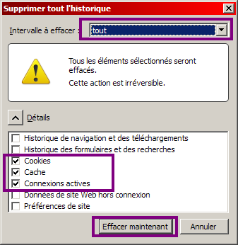Suppression des données sous Firefox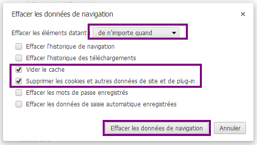Suppression des données sous Chrome
ouvrez un nouvel onglet vide, et appuyez alors sur F12 pour lancer Firebug depuis Firefox, ou l'outil équivalent intégré depuis Chrome ;
cliquez alors sur l'onglet Réseau de Firebug, ou sur l'onglet Network de l'outil intégré à Chrome.
Le tout premier accès
Rendez-vous ensuite sur la page http://localhost:8080/pro/connexion. Les données enregistrées côté client ont été effacées, et le serveur a été redémarré, il s'agit donc ici de notre toute première visite sur une page du site. En outre, nous savons que la servlet Connexion associée à cette page contient un appel à request.getSession(). Observez alors ce qui s'affiche dans votre outil (voir les figures suivantes).
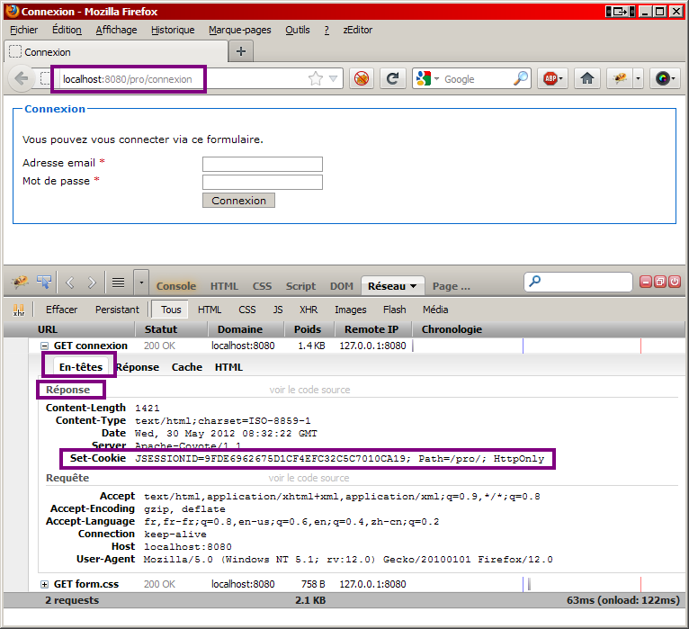Cookie dans la réponse avec l'outil Firebug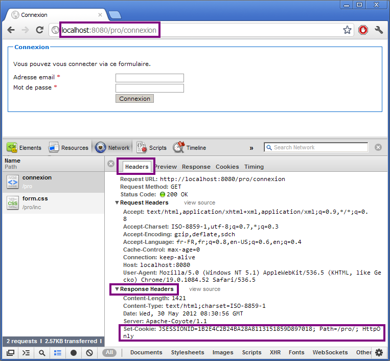Cookie dans la réponse avec l'outil de Chrome
Vous pouvez ici remarquer plusieurs choses importantes :
la réponse renvoyée par le serveur contient une instruction Set-Cookie, destinée à mettre en place le cookie de session dans le navigateur du client ;
le nom du cookie est bien JSESSIONID, et sa valeur est bien un long identifiant unique ;
bien que je sois le seul réel client qui accède au site, le serveur considère mes visites depuis Firefox et Chrome comme étant issues de deux clients distincts, et génère donc deux sessions différentes. Vérifiez les identifiants, ils sont bien différents d'un écran à l'autre.
L'accès suivant, avec la même session
Dans la foulée, rendez-vous à nouveau sur cette même page de connexion (actualisez la page via un appui sur F5 par exemple). Observez alors la figure suivante.
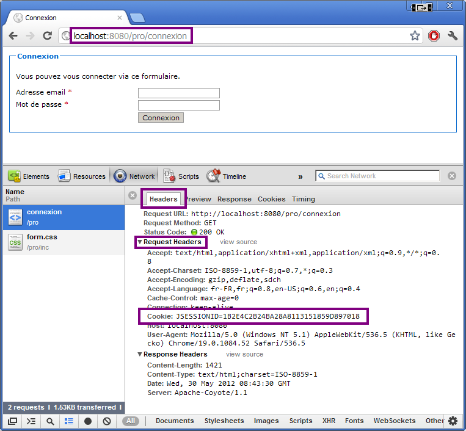Cookie dans la requête
Là encore, vous pouvez remarquer plusieurs choses importantes :
un cookie est, cette fois, envoyé par le navigateur au serveur, dans le paramètre Cookie de l'en-tête de la requête HTTP effectuée ;
sa valeur correspond à celle contenue dans le cookie envoyé par le serveur dans la réponse précédente ;
après réception de la première réponse contenant l'instruction Set-Cookie, le navigateur avait donc bien sauvegardé le cookie généré par le serveur, et le renvoie automatiquement lors des requêtes suivantes ;
dans la deuxième réponse du serveur, il n'y a cette fois plus d'instruction Set-Cookie : le serveur ayant reçu un cookie nommé JSESSIONID depuis le client, et ayant trouvé dans sa mémoire une session correspondant à l'identifiant contenu dans la valeur du cookie, il sait que le client a déjà enregistré la session en cours et qu'il n'est pas nécessaire de demander à nouveau la mise en place d'un cookie !
Cette fois encore, vous pouvez remarquer plusieurs choses importantes :
deux cookies nommés JSESSIONID interviennent : un dans la requête et un dans la réponse ;
la valeur de celui présent dans la requête contient l'identifiant de notre précédente session. Puisque nous n'avons pas fermé notre navigateur ni supprimé les cookies enregistrés, le navigateur considère que la session est toujours ouverte côté serveur, et envoie donc par défaut le cookie qu'il avait enregistré lors de l'échange précédent !
la valeur de celui présent dans la réponse contient un nouvel identifiant de session. Le serveur ayant supprimé la session de sa mémoire lors de la déconnexion du client (souvenez-vous du code de notre servlet de déconnexion), il ne trouve aucune session qui correspond à l'identifiant envoyé par le navigateur dans le cookie de la requête. Il crée donc une nouvelle session, et demande aussitôt au navigateur de remplacer le cookie existant par celui contenant le nouveau numéro de session, toujours via l'instruction Set-Cookie de la réponse renvoyée !
L'accès à une page sans session
Nous allons cette fois accéder à une page qui n'implique aucun appel à request.getSession(). Il nous faut donc créer une page JSP pour l'occasion, que nous allons nommer accesPublic.jsp et placer directement à la racine de notre application, sous le répertoire WebContent :
Redémarrez Tomcat, effacez les données de votre navigateur via un Ctrl + Maj + Suppr, et rendez-vous alors sur la page http://localhost:8080/pro/accesPublic.jsp. Observez la figure suivante.
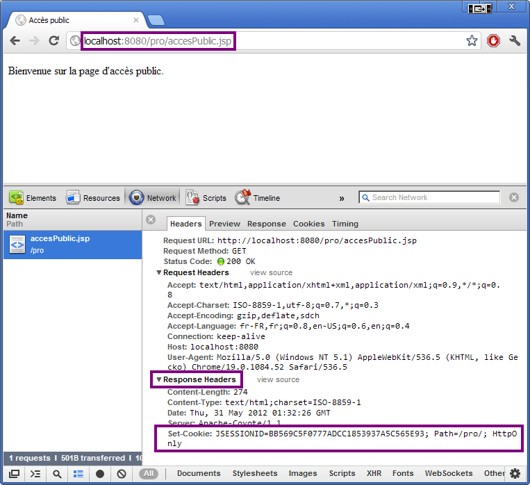Création de session par la JSP
Pourquoi le serveur demande-t-il la mise en place d'un cookie de session dans le navigateur ?!
En effet, c'est un comportement troublant ! Je vous ai annoncé qu'une session n'existait que lorsqu'un appel à request.getSession() était effectué. Or, le contenu de notre page accesPublic.jsp ne fait pas intervenir de session, et aucune servlet ne lui est associée : d'où sort cette session ? Eh bien rassurez-vous, je ne vous ai pas menti : c'est bien vous qui contrôlez la création de la session. Seulement voilà, il existe un comportement qui vous est encore inconnu, celui d'une page JSP : par défaut, une page JSP va toujours tenter de créer ou récupérer une session.
Nous pouvons d'ailleurs le vérifier en jetant un œil au code de la servlet auto-générée par Tomcat. Nous l'avions déjà fait lorsque nous avions découvert les JSP pour la première fois, et je vous avais alors fait remarquer que le répertoire contenant ces fichiers pouvait varier selon votre installation et votre système. Voici un extrait du code du fichier accesPublic_jsp.java généré :
Voilà donc l'explication de l'existence d'une session lors de l'accès à notre page JSP : dans le code auto-généré, il existe un appel à la méthode getSession() !
Comment éviter la création automatique d'une session depuis une page JSP ?
La solution qui s'offre à nous est l'utilisation de la directive page. Voici la ligne à ajouter en début de page pour empêcher la création d'une session :
<%@ page session="false" %>
Éditez donc votre page accesPublic.jsp et ajoutez-y cette directive en début de code. Redémarrez alors Tomcat, effacez les données de votre navigateur via un Ctrl + Maj + Suppr, et rendez-vous à nouveau sur la page http://localhost:8080/pro/accesPublic.jsp. Observez la figure suivante.
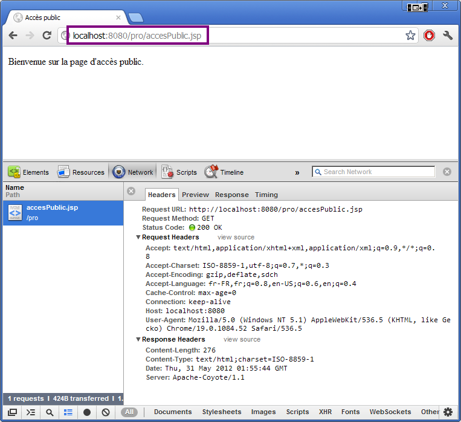Désactivation de la session dans la JSP
Vous pouvez cette fois remarquer qu'aucun cookie n'intervient dans l'échange HTTP ! Le serveur ne cherche pas à créer ni récupérer de session, et par conséquent il ne demande pas la mise en place d'un cookie dans le navigateur de l'utilisateur.
L'accès à une page sans cookie
Dernier scénario et non des moindres, l'accès à une page faisant intervenir un appel à request.getSession() depuis un navigateur qui n'accepte pas les cookies ! Eh oui, tous les navigateurs ne gardent pas leurs portes ouvertes, et certains refusent la sauvegarde de données sous forme de cookies. Procédez comme suit pour bloquer les cookies depuis votre navigateur.
Faites un clic droit dans la page et sélectionnez Informations sur la page.
Sélectionnez alors le panneau Permissions.
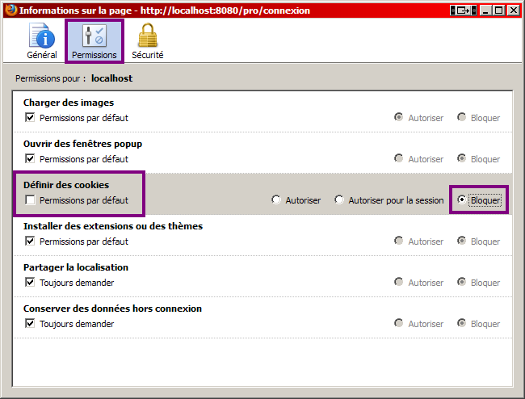Panneau Permissions
Sous Définir des cookies, décochez Permissions par défaut et cochez Bloquer, comme indiqué à la figure suivante.
Fermez la fenêtre Informations sur la page.
Depuis Chrome :
Cliquez sur l'icône représentant une clé à molette
qui est située dans la barre d'outils du navigateur.
Sélectionnez Paramètres.
Cliquez sur Afficher les paramètres avancés.
Dans la section "Confidentialité", cliquez sur le bouton Paramètres de contenu.
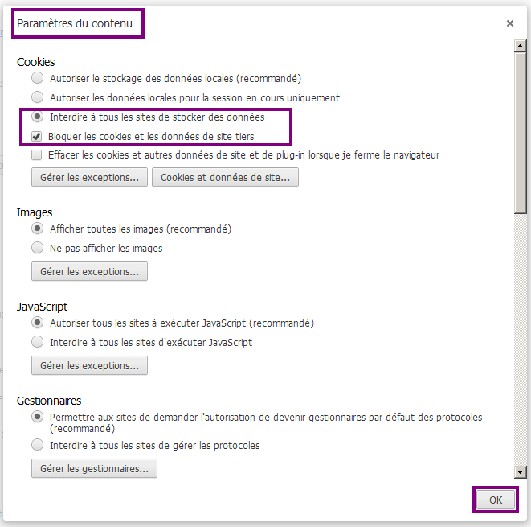Paramètres de contenu
Dans la section "Cookies", modifiez les paramètres comme indiqué à la figure suivante.
Redémarrez ensuite Tomcat, effacez les données de votre navigateur via un Ctrl + Maj + Suppr, et rendez-vous sur la page http://localhost:8080/pro/connexion. Vous observerez alors que la réponse du serveur contient une instruction Set-Cookie. Actualisez maintenant la page en appuyant sur F5, et vous constaterez cette fois que la requête envoyée par votre navigateur ne contient pas de cookie, et que la réponse du serveur contient à nouveau une instruction Set-Cookie présentant un identifiant de session différent ! C'est tout à fait logique :
le navigateur n'accepte plus les cookies, il n'a donc pas enregistré le premier identifiant envoyé par le serveur dans la première réponse. Par conséquent, il n'a pas envoyé d'identifiant dans la requête suivante ;
le serveur ne trouvant aucune information de session dans la seconde requête envoyée par le navigateur du client, il le considère comme un nouveau visiteur, crée une nouvelle session et lui demande d'en enregistrer le nouvel identifiant dans un cookie.
Bien, c'est logique. Mais dans ce cas, comment le serveur peut-il associer une session à un utilisateur ?
Voilà en effet une excellente question : comment le serveur va-t-il être capable de retrouver des informations en session s'il n'est pas capable de reconnaître un visiteur d'une requête à l'autre ? Étant donné l'état actuel de notre code, la réponse est simple : il ne peut pas ! D'ailleurs, vous pouvez vous en rendre compte simplement.
Succès de la connexion
Rendez-vous sur la page de connexion, saisissez des données correctes et validez le formulaire. Observez la figure suivante.
Connexion
Ouvrez alors un nouvel onglet, et rendez-vous à nouveau sur la page de connexion. Observez la figure suivante.
Lors de nos précédents tests, dans la partie sur les vérifications, le formulaire réaffichait l'adresse mail avec laquelle vous vous étiez connectés auparavant. Cette fois, aucune information n'est réaffichée et le formulaire de connexion apparaît à nouveau vierge. Vous constatez donc bien l'incapacité du serveur à vous reconnaître !
Pas de panique, nous allons y remédier très simplement. Dans notre page connexion.jsp, nous allons modifier une ligne de code :
<!-- Dans la page connexion.jsp, remplacez la ligne suivante : -->
<form method="post" action="connexion">
<!-- Par cette ligne : -->
<form method="post" action="<c:url value="/connexion" />">
Si vous reconnaissez ici la balise <c:url> de la JSTL Core, vous devez également vous souvenir qu'elle est équipée pour la gestion automatique des sessions. Je vous avais en effet déjà expliqué que cette balise avait l'effet suivant :
<%-- L'url ainsi générée --%>
<c:url value="test.jsp" />
<%-- Sera rendue ainsi dans la page web finale,
si le cookie est présent --%>
test.jsp
<%-- Et sera rendue sous cette forme si le cookie est absent --%>
test.jsp;jsessionid=BB569C7F07C5E887A4D
Et ça, c'est exactement ce dont nous avons besoin ! Puisque notre navigateur n'accepte plus les cookies, nous n'avons pas d'autre choix que de faire passer l'identifiant de session directement au sein de l'URL.
Une fois la modification sur la page connexion.jsp effectuée, suivez le scénario de tests suivant.
Rendez-vous à nouveau sur la page http://localhost:8080/pro/connexion, et regardez à la fois la réponse envoyée par le serveur et le code source de la page de connexion. Vous constaterez alors que, puisque le serveur ne détecte aucun cookie présent chez le client, il va d'un côté tenter de passer l'identifiant de session via l'instruction Set-Cookie, et de l'autre générer une URL précisant l'identifiant de session. Voyez plutôt la figure suivante.
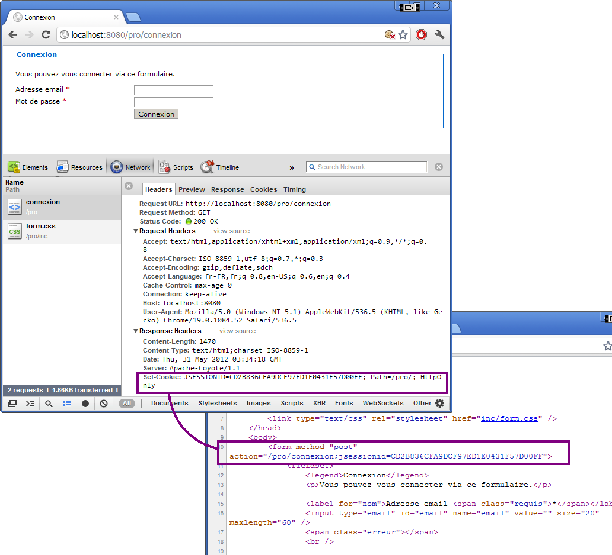
Connectez-vous alors avec des données valides. Vous retrouverez alors, dans la barre d'adresses de votre navigateur, l'URL modifiée par la balise <c:url>, contenant l'identifiant de session passé par le serveur (voir la figure suivante).
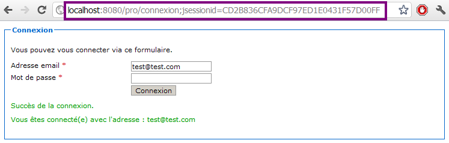
Ouvrez un nouvel onglet, et copiez/collez l'URL dans la barre d'adresses pour y ouvrir à nouveau la page de connexion en conservant le JSESSIONID. Vous constaterez cette fois que le serveur vous a bien reconnus en se basant sur l'identifiant contenu dans l'URL que vous lui transmettez, et qu'il est capable de retrouver l'adresse mail avec laquelle vous vous êtes connectés (voir la figure suivante).
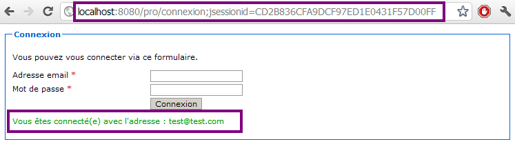
Accédez maintenant à la page http://localhost:8080/pro/connexion sans préciser le JSESSIONID dans l'URL, et constatez que le serveur est à nouveau incapable de vous reconnaître et vous affiche un formulaire vierge !
Nous en avons enfin terminé avec notre batterie de tests, et avec tout ce que vous avez découvert, les sessions n'ont maintenant presque plus aucun secret pour vous !
En résumé
La session complète un manque du protocole HTTP, en permettant au serveur de reconnaître et tracer un visiteur ;
une session est un espace mémoire alloué sur le serveur, et dont le contenu n'est accessible que depuis le serveur ;
le serveur représente une session par l'objet HttpSession, initialisé par un simple appel à request.getSession() ;
afin de savoir quel client est associé à telle session créée, le serveur transmet au client l'identifiant de la session qui lui est dédiée, le JSESSIONID, dans les en-têtes de la réponse HTTP sous forme d'un cookie ;
si le navigateur accepte les cookies, il stocke alors ce cookie contenant l'identifiant de session, et le retransmet au serveur dans les en-têtes de chaque requête HTTP qui va suivre ;
si le serveur lui renvoie un nouveau numéro, autrement dit si le serveur a fermé l'ancienne session et en a ouvert une nouvelle, alors le navigateur remplace l'ancien numéro stocké par ce nouveau numéro, en écrasant l'ancien cookie par le nouveau ;
si le navigateur n'accepte pas les cookies, alors le serveur dispose d'un autre moyen pour identifier le client : il est capable de chercher l'identifiant directement dans l'URL de la requête, et pas uniquement dans ses en-têtes ;
il suffit au développeur de manipuler correctement les URL qu'il met en place dans son code - avec <c:url> par exemple - pour permettre une gestion continue des sessions, indépendante de l'acceptation ou non des cookies côté client ;
une session expire et est détruite après le départ d'un visiteur (fermeture de son navigateur), après son inactivité prolongée ou après sa déconnexion manuelle ;
pour effectuer une déconnexion manuellement, côté serveur il suffit d'appeler la méthode session.invalidate() ;
la désactivation de la gestion des sessions sur une page en particulier est possible via la directive JSP <%@ page session="false" %>.